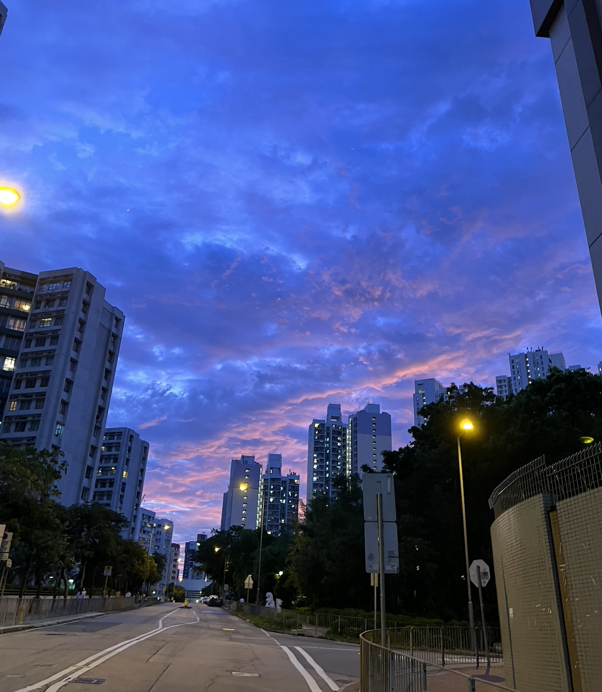
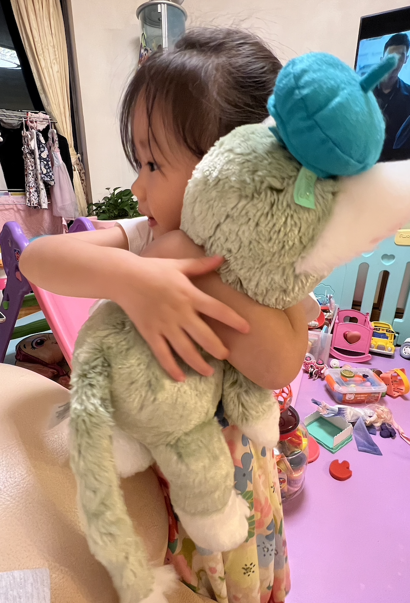
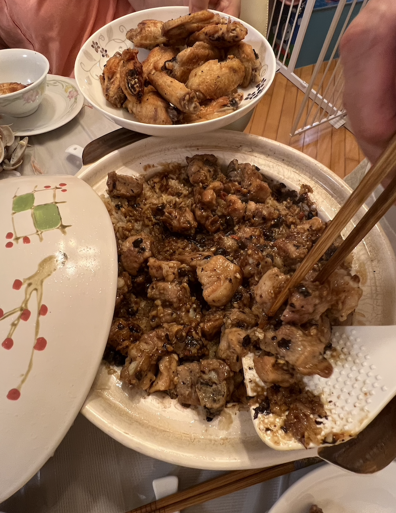
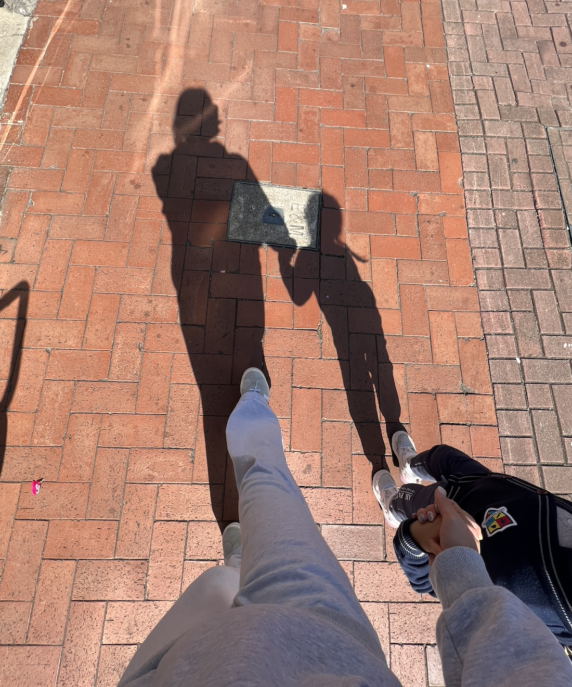

This is where my grandparents live, and I spent a lot of my childhood here.
Now, I have a cute baby cousin whom I spend all my time with when I'm home.
So many memories are held here, and the meals my grandpa cooks for me are something I will never forget.

Top 5 sunset I've ever seen — taken in the garden next to my grandparents' apartment.

My cousin — someone I spend all my time with in HK. She brings me so much joy and I miss her most when I’m away.

Claypot rice made by my grandpa — ribs, rice, and a special bean sauce. I crave this every time I’m away from HK.

Me and my cousin on a walk — moments like these make me genuinely happy.